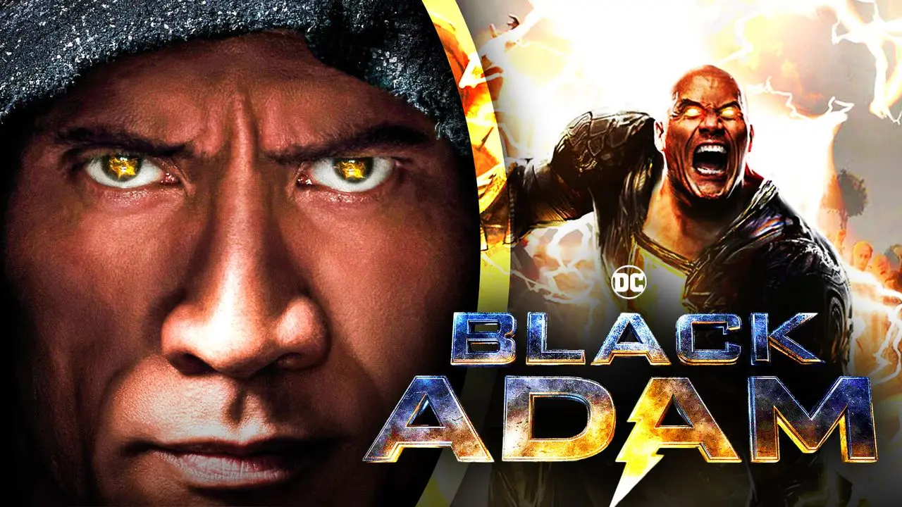
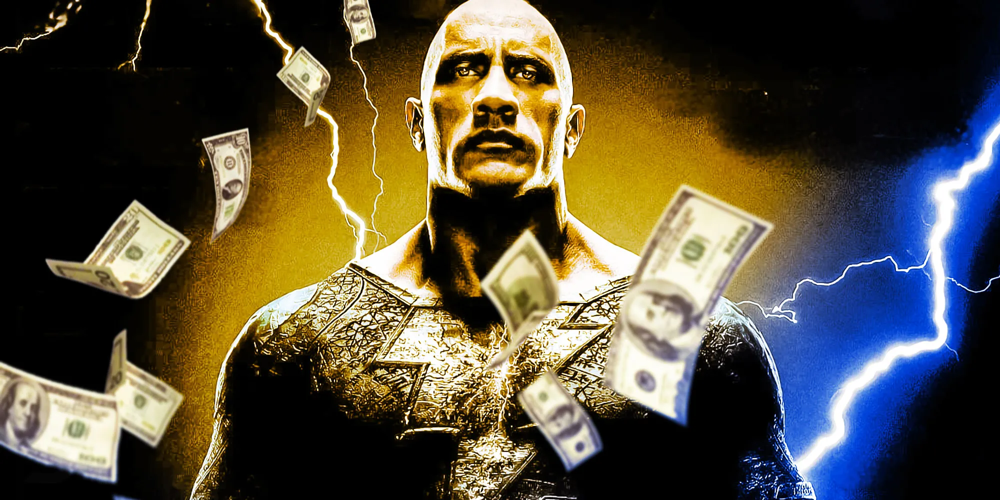

“Adão Negro”: Filme já está disponível para streaming
O filme “Adão Negro”, mais recente lançamento da DC nos cinemas, já está disponível para streaming!
Protagonizado por Dwayne “The Rock” Johnson, “Adão Negro” foi um dos filmes de maior bilheteria do ano e chegou ao catálogo da HBO Max nesta sexta-feira (16). Com Noah Centineo como Esmaga-Átomo, Quintessa Swindell como Ciclone, Pierce Brosnan como Senhor Destino e Aldis Hodge como Gavião Negro, “Adão Negro” ainda pode ser visto em algumas salas de cinema espalhadas pelo Brasil.
Antes de chegar ao catálogo da HBO Max, “Adão Negro” já estava disponível para aluguel e compra digital, em várias plataformas diferentes, e com conteúdo inédito exclusivo.
A compra do filme nas plataformas digitais vem com mais de um hora de conteúdo inédito exclusivo, incluindo mais sobre a preparação de Dwayne para o papel, o design de figurino, inovações tecnológicas do filme, a mitologia por trás do roteiro e muito mais.
“Adão Negro” pode ser adquirido para aluguel nas plataformas digitais Amazon Prime Video, Claro TV, SKY Play, UOL Play, Vivo Play, Watch Brasil, Youtube, Microsoft, Apple TV, e para a opção de compras estará disponível nas lojas Apple TV, Youtube, Google Play e Microsoft.
